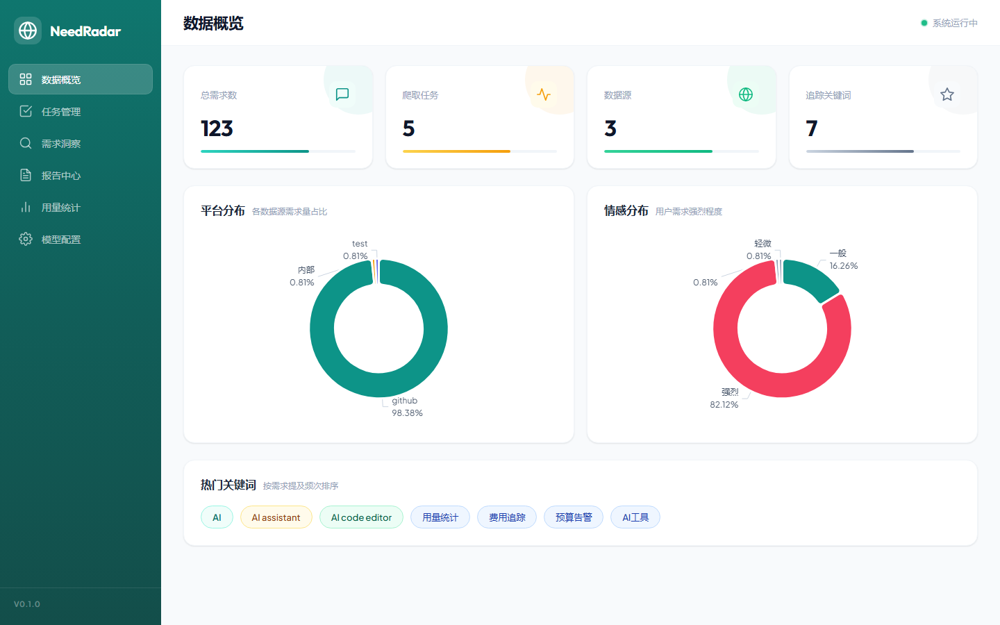

01 / PROBLEM
看似合理的需求，可能只是被改写的文章。A plausible-looking need may be an article rewritten as one.
需求抽取系统容易把文章、教程或趋势内容改写成需求。如果没有冻结样本、标注来源和拒绝指标，就无法知道系统是否理解了用户意图。Requirement extractors can turn articles, tutorials, or trend summaries into plausible needs. Without frozen samples, annotation provenance, and rejection metrics, intent understanding remains unproven.
02 / SYSTEM DECISION
主链路有记录，人工复核有边界。The main path is recorded; human review has a clear boundary.
03 / FAILURE RISK
看似通顺的输出，可能系统性误接收非需求内容。Fluent output can systematically accept content that is not a need.
文章、教程和趋势内容会被抽取 schema 改写成看似合理的需求；若没有拒绝指标和来源记录，这一失效模式难以被定位。Articles, tutorials, and trend content can be rewritten into plausible needs by the extraction schema; without rejection metrics and provenance, this failure mode is hard to locate.
04 / ENGINEERING CONTROLS
冻结数据集并保存复核来源。Freeze the dataset and preserve review provenance.
05 / EVIDENCE + FAILURE FINDING
把低准确率和误接收，作为需要解释的结果。Treat weak accuracy and false acceptance as findings to explain.

冻结样本Frozen records
100 (34 / 33 / 33)
需求存在性准确率Requirement-presence accuracy
49.00%
拒绝 precision / recallRejection precision / recall
100% / 3.77%
人工复核覆盖率Human review coverage
7% targeted
全量测试Test result
582 passed
系统接受了 98 条记录，而代理金标中只有 47 条属于需求。51 个假阳性是主要问题；掘金的 33 条文章全部被错误接受，说明 schema 会把描述性内容强行改写成需求。The system accepted 98 records while proxy gold contained 47 positive needs. The 51 false positives dominate; all 33 Juejin articles were incorrectly accepted, showing the schema rewrote descriptive content as needs.
06 / LIMITATIONS + LINKS
限制Limitation
代理辅助金标不等于全人工金标。字符 bigram 可以发现语言不一致与复核候选，但不能独立证明跨语言语义错误。Agent-assisted proxy gold is not full human ground truth. Character bigrams can flag language inconsistency and review candidates, but cannot independently prove semantic error across languages.